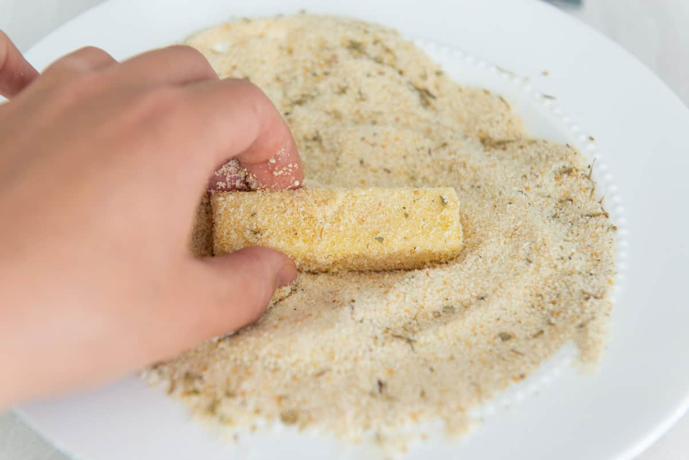

Muzzarela-sticks
""
INGREDIENTS
- 16 oz block whole milk mozzarella cheese
- 3 large eggs
- 3 cups Italian style bread crumbs
- salt
- tallow (beef fat)
INSTRUCTION
- Cut the block of cheese into 1/2 inch thick sticks, a few inches tall (see blog photos). I had 20 pieces.
- Place the eggs in a bowl with 1/4 tsp salt and 1 tablespoon of water, and whisk to combine. Place the bread crumbs in a second bowl next to the eggs.
- Take a cheese stick and dip it into the egg, letting the excess drip off. Then coat it in the bread crumbs, shake off the excess, and place on a tray. Repeat with the remaining cheese sticks.
- Once each cheese stick has been breaded, take each one through the egg and bread crumbs again for a second coating, at a minimum. I prefer to bread the cheese sticks three times for a more robust shell, but two coats is sufficient to prevent the cheese from leaking during cooking.
- Freeze the mozzarella sticks, on the tray, for at least for two hours.
- Heat the tallow or frying fat of choice to 365F, using either a deep fryer or a heavy bottomed 8" saucepan monitored with a thermometer. You want the fat to come a few inches up the sides of the pan.
- Fry the mozzarella sticks in batches for about 2 minutes, until golden brown.
- Let the cheese sticks drain briefly on a paper towel, then serve promptly with marinara or your favorite dunking sauce. Enjoy!
INSTRUCTION-PICTURES


Back to menu